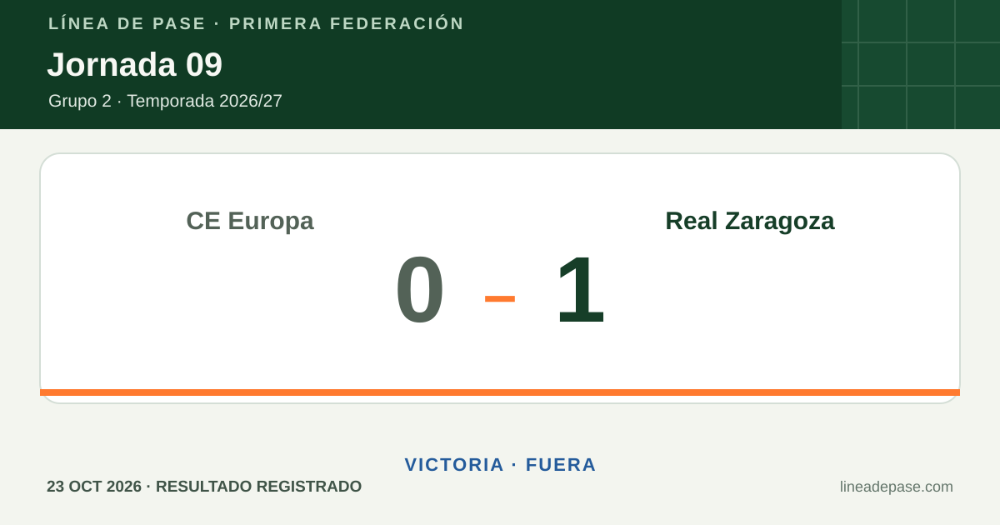
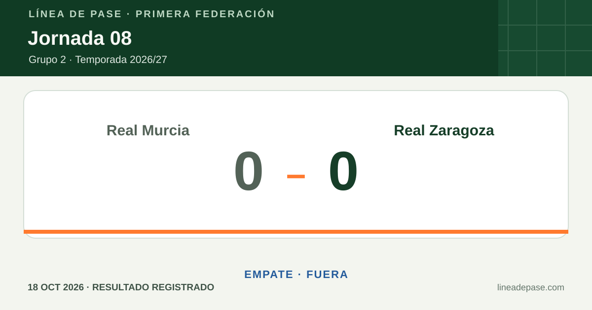

Explora Línea de pase
Archivo visual por jornada
Marcadores y estadísticas del Real Zaragoza, con comparación de jornadas y filtros por temporada y rival.
Consulta los resultados, filtra por temporada o rival y compara dos jornadas sin cambiar el marcador vigente de portada.
Muestra disponible · 2026/27
La temporada, en números
Medias por partido en 6 jornadas con ficha completa.
9 marcadores publicados · 6 fichas estadísticas validadas · 3 pendientes de validar.
- Posesión del Zaragoza
- 60,5 %
- Tiros · Zaragoza–rival
- 14,3–9,2
- Tiros del Zaragoza a puerta
- 5,8
Dos jornadas, frente a frente
Comparar marcadores
La comparación abre los gráficos históricos y añade métricas solo si ambas fichas están completas.
Comprobando contraste…
Hasta 6 plantillas guardadas en este navegador.
Elige formato con una vista previa
Hoja de contacto · compara las plantillas
Pulsa una miniatura para aplicar sus opciones de formato.
Compara dos estilos antes de descargar
La comparación no cambia tus opciones de descarga.
El SVG guarda este texto y el ZIP social incluye un archivo de texto para acompañar las imágenes.
El ZIP contiene dos diapositivas cuadradas: una por partido, en el orden seleccionado.
0/72 caracteres
Una vista del curso
Mapa de la temporada
Todos los marcadores disponibles, en orden de jornada. Las métricas solo se incluyen en partidos con ficha validada; si la campaña es larga, se reparte en varias láminas.
Los filtros afectan a las jornadas del mapa. El balance y el carrusel usan todos los resultados publicados.
Forma reciente
Real Zaragoza · últimos 5
Rival seleccionado
Selecciona un rival para comparar la muestra disponible.
Enlaces guardados
Comprobando contraste y margen de lectura…
Vista de impresión
Hojas A4 a tamaño real
En móvil, abre la maqueta cuando quieras verla completa. El PDF conserva las medidas del QR; selecciona escala 100 % al imprimir. El fondo blanco reduce el uso de tinta.
Mostrar las maquetas A4
Selección actual del mapa
IMPRIMIR AL 100 % · PAPEL A4
Selección actual del mapa
60 mm · IMPRIMIR AL 100 % · PAPEL A4
Hasta seis selecciones, guardadas solo en este navegador.
Peso de las exportaciones
Tamaño exacto calculado en este navegador para el diseño actual.
Calculando tamaños…
Previsualizar ficha A5
Pulsa la maqueta o la tecla P para ampliar o cerrar la vista; Escape también la cierra. El porcentaje compara píxeles oscuros del SVG; el ahorro indicado es una diferencia estimada de superficie, no una medida de tinta real.
Cobertura aproximada de tinta
- Color Calculando…
- Monocromo · bajo consumo Calculando…
- Alto contraste · fotocopia Calculando…
Las opciones de papel y salida se guardan en este navegador.
Vista previa compacta de la hoja A4
La línea discontinua naranja indica el área segura. El espacio exterior reserva sitio para el margen y las marcas de corte.
Puedes ampliar una sola variante en el A4 y comprobar el tamaño con la regla de 10 mm. La impresión directa abre el diálogo del navegador.
Vectorial, con marcas de corte, escala de 10 mm y límite de 300 KB.
Incluye versiones cuadrada, vertical e historias.

Ficha estadística sin validar; se muestra solo el marcador.

Ficha estadística validada; no se comparan métricas porque la otra jornada no está validada.
9 jornadas
El marcador puede estar confirmado aunque la ficha estadística siga pendiente. Las fichas sin validar no se incluyen en las medias ni en las comparaciones de métricas.
| Jornada | Fecha | Rival | Sede | Resultado | Posesión | Tiros · Zaragoza–rival | A puerta | Cobertura | Gráficos |
|---|---|---|---|---|---|---|---|---|---|
| J09 | 23 oct 2026 | CE Europa | Fuera | 1–0 | — | — | — | Ficha estadística sin validar | PNG · SVG |
| J08 | 18 oct 2026 | Real Murcia | Fuera | 0–0 | 49 % | 9–9 | 3–1 | Ficha estadística validada | PNG · SVG · Datos PNG · Datos SVG |
| J07 | 11 oct 2026 | Atlético Madrileño | Fuera | 4–4 | 65 % | 16–15 | 8–7 | Ficha estadística validada | PNG · SVG · Datos PNG · Datos SVG |
| J06 | 4 oct 2026 | CD Teruel | Casa | 4–1 | 64 % | 17–5 | 7–3 | Ficha estadística validada | PNG · SVG · Datos PNG · Datos SVG |
| J05 | 25 sep 2026 | UD Ibiza | Fuera | 2–0 | 56 % | 8–8 | 6–2 | Ficha estadística validada | PNG · SVG · Datos PNG · Datos SVG |
| J04 | 20 sep 2026 | FC Cartagena | Casa | 1–0 | 62 % | 17–8 | 7–2 | Ficha estadística validada | PNG · SVG · Datos PNG · Datos SVG |
| J03 | 13 sep 2026 | Juventud Torremolinos CF | Fuera | 4–3 | — | — | — | Ficha estadística sin validar | PNG · SVG |
| J02 | 5 sep 2026 | Antequera CF | Casa | 1–0 | 67 % | 19–10 | 4–2 | Ficha estadística validada | PNG · SVG · Datos PNG · Datos SVG |
| J01 | 30 ago 2026 | Gimnàstic de Tarragona | Fuera | 0–2 | — | — | — | Ficha estadística sin validar | PNG · SVG |


Las métricas se muestran solo para fichas completas y validadas; el marcador puede estar confirmado aunque las estadísticas sigan pendientes. Los tiros a puerta aparecen cuando están disponibles para ambos equipos y cuadran con los tiros totales y los goles. Los filtros y la comparación requieren JavaScript; toda la tabla permanece visible sin él.